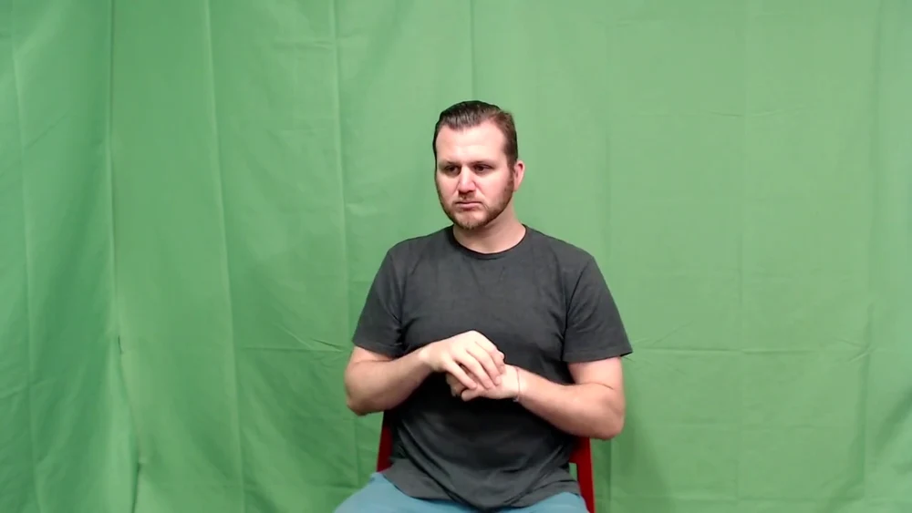
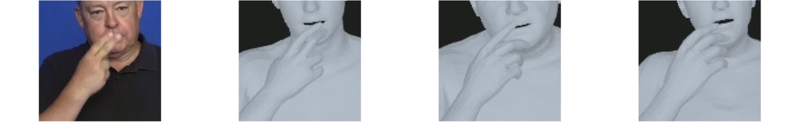

Sign language · Human mesh recovery
A sign is more
than a pose.
Small movements carry meaning.
We compare how ten methods reconstruct a signer’s body, face and hands in 3D—and how better camera alignment changes the result.
Explore the findingsChilean Sign Language · LSCh (OF-HMR)
The study, at a glance
From a video to a fair comparison.
- 01Gather the methods
Review approaches that recover a full 3D person.
- 02Bring the data together
Keep the original frames, timing and order.
- 03Reconstruct the signer
Give every method the same video.
- 04Align the camera
Match the viewpoint, size and placement.
- 05Look closer
Measure the body, face and each hand.
01 / The methods
Ten ways to recover
a person in 3D.
Human Mesh Recovery turns an ordinary image or video into a 3D human model. We brought together methods that represent the body, articulated hands and face.
The reviewed configurations use multiple camera views, so they sit outside this single-camera comparison.
02 / The datasets
Different languages.
Different recording conditions.
Weather broadcasts, daily conversations and controlled recordings bring different challenges. We preserve each sequence’s original order and timing.

How2Sign
A short pilot helped examine where hand-position scores and visible finger shapes disagree.
03 / The alignment
Right motion.
Better placement.
A reconstruction can appear too small, too low or too far away. We adjust the camera and the model’s placement to match the recording, while keeping its articulated pose and body shape.
Adjust camera scale, position and perspective.
Preserve body dimensions and articulated pose.
Review regional errors, motion and head visibility.
04 / Why the details matter
A small average error
can hide a different
hand shape.
Finger position, hand shape and facial expression all contribute to signing. A single whole-body score cannot tell the whole story.
So we look at the body, face and each hand separately—and inspect the matching images.

05 / The results
Look at every part.
We measure the distance between matching points in the original image and the 3D reconstruction, seen through its camera. Smaller distances mean closer alignment.
Overall alignment
PHOENIX-2014-T · 42 sequences
All five measures
Mean ± variation between sequences · pixels| Method | Overall MRE | Body | Face | Left hand | Right hand |
|---|
What is being measured?
MRE means mean reprojection error: the average distance between corresponding points, measured in the original image’s pixels.
The comparison uses 99 points: six body points at the shoulders, elbows and wrists; 51 points inside the face; and 21 points per hand. Body error excludes face and finger points. All ten methods use the same eligible observations.
Errors are averaged within each sequence, then across sequences. The ± value is the sample standard deviation. Bold values mark the lowest mean in each column.
The reference points are estimated automatically. Camera alignment uses those same references. These results describe 2D agreement on the evaluated sequences; they do not establish 3D accuracy or preservation of linguistic meaning.
What this work brings together
A shared way to look
closer at signing.
A collection of reconstruction methods. A common evaluation across three datasets. Camera alignment that preserves the pose. And a separate look at every hand.
Read the full study Shared evaluation · 25 October 2026